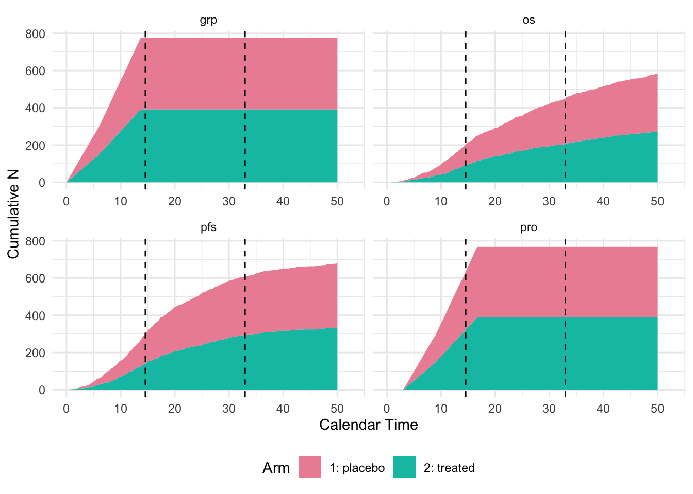

library(dplyr)
library(TrialSimulator)
library(kableExtra)
set.seed(12345)Template for Enrichment Design
Design
We consider a randomized phase III study with an enrichment design.
- Start with one placebo arm and one treatment arm, with a 1:1 randomization ratio.
- Planned trial duration is up to 40 months.
- Randomize 50 patients per month for the first 6 months, then 65 patients per month until 800 patients are recruited.
- Dropout rate is 5% at month 12 and 12% at month 24.
- Two time-to-event endpoints
PFSandOSand a binary endpoint patient-reported outcome (PRO). - A binary biomarker is used to define subgroups
A(35%) andB(65%) of the population.- In subgroup
A, medians ofPFSin placebo and treatment arms are 8.4 and 12.3 months, approximately a hazard ratio 0.68. - In the overall population, medians of
PFSin placebo and treatment arms are 8.3 and 11.5 months, approximately a hazard ratio 0.72. - In subgroup
A, medians ofOSin placebo and treatment arm are 13.2 and 18.8 months, approximately a hazard ratio 0.70. - In the overall population, medians of
OSin placebo and treatment arm are 14.5 and 19.3 months, approximately a hazard ratio 0.75. - Rates of
PROin placebo and high dose arms are 0.3 and 0.5. PROneeds 3 months to generate a readout.
- In subgroup
- A group sequential design is adopted.
- Interim analysis is performed when 300
PFSevents are observed. - Final analysis is performed for all three endpoints when 450
OSevents are observed.
- Interim analysis is performed when 300
Implementation
Loading relevant packages
Helper functions
In this section, we define helper functions that are task-specific. For example, statistician may simulate correlated PFS, OS and PRO in various ways. For the purpose of illustration, we simulate independent endpoints.
A biomarker is generated to define subgroups of the population. TrialSimulator provides a helper function solveMixtureExponentialDistribution to derive median of the subgroup B given meidans in the overall population and the subgroup A.
#' Simulate correlated PFS and OS. Marginally, both endpoints follow exponential distribution.
#' @param n integer. Number of samples.
#' @param median_pfs numeric vector. Median of PFS in overall population and subgroup A.
#' @param median_os numeric vector. Median of OS in overall population and subgroup A.
#' @param prop_subgroup_A numeric. Proportion of subgroup A.
correlated_pfs_os <- function(n, median_pfs, median_os, prop_subgroup_A){
grp <- sample(c('A', 'B'), size = n, replace = TRUE,
prob = c(prop_subgroup_A, 1 - prop_subgroup_A))
median_pfs_A <- median_pfs[2]
median_pfs_B <- solveMixtureExponentialDistribution(weight1 = prop_subgroup_A,
median1 = median_pfs_A,
overall_median = median_pfs[1])
pfs <- rexp(n, rate = log(2) / ifelse(grp == 'A', median_pfs_A, median_pfs_B))
median_os_A <- median_os[2]
median_os_B <- solveMixtureExponentialDistribution(weight1 = prop_subgroup_A,
median1 = median_os_A,
overall_median = median_os[1])
os <- rexp(n, rate = log(2) / ifelse(grp == 'A', median_os_A, median_os_B))
data.frame(grp = grp, pfs = pfs, os = os, pfs_event = 1, os_event = 1)
}Define Endpoints and Arms
We define three endpoints in an arm together in the helper function. readout is specified for the endpoint OR as it is not a time-to-event endpoint.
pfs_and_os_in_pbo <- endpoint(name = c('pfs', 'os', 'grp'),
type = c('tte', 'tte', 'non-tte'),
readout = c(grp = 0),
generator = correlated_pfs_os,
median_pfs = c(8.3, 8.4),
median_os = c(14.5, 13.2),
prop_subgroup_A = .35)
pro_in_pbo <- endpoint(name = 'pro', type = 'non-tte', readout = c(pro = 3),
generator = rbinom, size = 1, prob = .3)
pbo <- arm(name = 'placebo')
pbo$add_endpoints(pfs_and_os_in_pbo, pro_in_pbo)pfs_and_os_in_trt <- endpoint(name = c('pfs', 'os', 'grp'),
type = c('tte', 'tte', 'non-tte'),
readout = c(grp = 0),
generator = correlated_pfs_os,
median_pfs = c(11.5, 12.3),
median_os = c(19.3, 18.8),
prop_subgroup_A = .35)
pro_in_trt <- endpoint(name = 'pro', type = 'non-tte', readout = c(pro = 3),
generator = rbinom, size = 1, prob = .5)
trt <- arm(name = 'treated')
trt$add_endpoints(pfs_and_os_in_trt, pro_in_trt)Define A Trial
We use the Weibull distribution to model dropout. The TrialSimulator package provides a helper function to compute the shape and scale parameters of the Weibull distribution.
weibullDropout(time = c(12, 24), dropout_rate = c(.05, .12)) shape scale
1.317422 114.372097 To define arms and a trial, we can
accrual_rate <- data.frame(end_time = c(6, Inf),
piecewise_rate = c(50, 65))
trial <- trial(
name = 'trial-123', n_patients = 800, duration = 50,
enroller = StaggeredRecruiter, accrual_rate = accrual_rate,
dropout = rweibull, shape = 1.32, scale = 114.4
)
trial$add_arms(sample_ratio = c(1, 1), pbo, trt)Define Trial Events and Actions
In this example, we don’t implement the statistical tests.
action_at_interim <- function(trial, event_name){
locked_data <- trial$get_locked_data(event_name)
#' codes below this line are customized to conduct statistical tests and save results
#' here we only display a few lines of data snapshot
head(locked_data)
}action_at_final <- function(trial, event_name){
locked_data <- trial$get_locked_data(event_name)
#' codes below this line are customized to conduct statistical tests and save results
#' here we only display a few lines of data snapshot
head(locked_data)
}We plan three trial events for dose selection, interim and final analysis.
interim <- event(name = 'interim analysis',
trigger_condition =
eventNumber(endpoint = 'pfs', n = 300),
action = action_at_interim)final <- event(name = 'final analysis',
trigger_condition = eventNumber(endpoint = 'os', n = 450),
action = action_at_final)We then register the two trial events to a listener who will monitor the trial.
listener <- listener()
#' register trial events with the listener
listener$add_events(interim, final)Execute a Trial
To execute a trial, we call the member function run in the controller of the trial and listener. Here we simulate one trial, so that a plot of cumulative events are generated automatically for each of the endpoints. We can set n to a larger integer for more replicates.
controller <- controller(trial, listener)
controller$run(n = 1, plot_event = TRUE)Conditioin of event <interim analysis> is being checked. Data is locked at time = 14.5571437764039 for event <interim analysis>.
Locked data can be accessed in Trial$get_locked_data('interim analysis').
Number of events at lock time: patient pfs os grp pro arms
1 800 300 203 775 634 <placebo, treated>Action for <interim analysis> is executed: patient_id arm enroll_time dropout_time grp pfs os
1 1 placebo 0.00 84.027160 B 6.77716250 14.557144
2 2 treated 0.02 8.404579 A 8.38457931 3.845738
3 3 treated 0.04 257.277171 A 6.78742783 14.517144
4 4 placebo 0.06 76.273570 A 14.49714378 14.497144
5 5 treated 0.08 37.206375 A 0.09218782 6.324863
6 6 placebo 0.10 244.667643 A 7.48749757 13.266493
pfs_event os_event grp_readout pro pro_readout
1 1 0 0 0 3
2 0 1 0 1 3
3 1 0 0 0 3
4 0 0 0 1 3
5 1 1 0 0 3
6 1 1 0 0 3Conditioin of event <final analysis> is being checked. Data is locked at time = 32.9555160032971 for event <final analysis>.
Locked data can be accessed in Trial$get_locked_data('final analysis').
Number of events at lock time: patient pfs os grp pro arms
1 800 610 450 775 767 <placebo, treated>Action for <final analysis> is executed: patient_id arm enroll_time dropout_time grp pfs os
1 1 placebo 0.00 84.027160 B 6.77716250 15.209230
2 2 treated 0.02 8.404579 A 8.38457931 3.845738
3 3 treated 0.04 257.277171 A 6.78742783 25.242884
4 4 placebo 0.06 76.273570 A 32.89551600 15.850740
5 5 treated 0.08 37.206375 A 0.09218782 6.324863
6 6 placebo 0.10 244.667643 A 7.48749757 13.266493
pfs_event os_event grp_readout pro pro_readout
1 1 1 0 0 3
2 0 1 0 1 3
3 1 1 0 0 3
4 0 1 0 1 3
5 1 1 0 0 3
6 1 1 0 0 3
Extract the Output
We can display information saved for each of the simulated trials by the member function get_output. Note that even if we do nothing in the action function, time of trial events and event counts for endpoints are saved automatically.
controller$get_output() %>%
kable(escape = TRUE) %>%
kable_styling(bootstrap_options = "striped",
full_width = FALSE,
position = "left") %>%
scroll_box(width = "100%")| trial | seed | event_time_<interim analysis> | n_events_<interim analysis>_<patient_id> | n_events_<interim analysis>_<pfs> | n_events_<interim analysis>_<os> | n_events_<interim analysis>_<grp> | n_events_<interim analysis>_<pro> | n_events_<interim analysis>_<arms> | event_time_<final analysis> | n_events_<final analysis>_<patient_id> | n_events_<final analysis>_<pfs> | n_events_<final analysis>_<os> | n_events_<final analysis>_<grp> | n_events_<final analysis>_<pro> | n_events_<final analysis>_<arms> | error_message |
|---|---|---|---|---|---|---|---|---|---|---|---|---|---|---|---|---|
| trial-123 | 1948734375 | 14.55714 | 800 | 300 | 203 | 775 | 634 | <placebo, treated> | 32.95552 | 800 | 610 | 450 | 775 | 767 | <placebo, treated> |